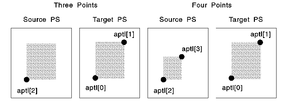

You can specify the sizes of the rectangular bit blocks in both the source and the target presentation spaces. To do this, provide an array of up to four device-coordinate positions as input to the call. The first two positions define the lower-left and upper-right corners of the target rectangle; the second two define the same two corners of the source rectangle.
If you want the two rectangles to be of equal size, do not specify the device coordinates of the upper-right corner of the source rectangle. The correct amount of data is automatically transferred to fill the target rectangle. The following figure shows the points count for bit-block transfers.
Points Count for Bit-Block Transfers
Equal-size rectangles can be built much faster than rectangles that need stretching or compressing. Compression options (flOptions) are ignored if the rectangles are to be of equal size.
If the rectangles are not to be of equal size, you must specify all four coordinate points. The bit-map data is stretched, if the target rectangle is larger than the source rectangle, or compressed, if the target rectangle is smaller, to fit the target rectangle. The bit map is stretched by duplicating rows and columns of data, an action that might cause distortion of the image. If the data is to be compressed, you can specify one of three compression options as shown in the following table.
Bit-map Data Compression Rules
┌────────────────────┬────────────────────────────────────────┐ │Option │Compression Rules │ ├────────────────────┼────────────────────────────────────────┤ │BBO_OR │Compresses the bit map data as │ │ │necessary, using a logical OR operation │ │ │on the eliminated rows and columns. This│ │ │is useful for preserving the foreground │ │ │when foreground pels are "1" and the │ │ │background pels are "0". │ ├────────────────────┼────────────────────────────────────────┤ │BBO_AND │Compresses the bit map data as │ │ │necessary, using a logical AND operation│ │ │on the eliminated rows and columns. This│ │ │is useful for preserving the foreground │ │ │when foreground pels are "0" and the │ │ │background pels are "1". │ ├────────────────────┼────────────────────────────────────────┤ │BBO_IGNORE │Compresses the bit map data as │ │ │necessary, but ignores any eliminated │ │ │rows or columns. This is most useful for│ │ │color bit maps, where the results of │ │ │combining pels of different colors are │ │ │unpredictable. │ └────────────────────┴────────────────────────────────────────┘